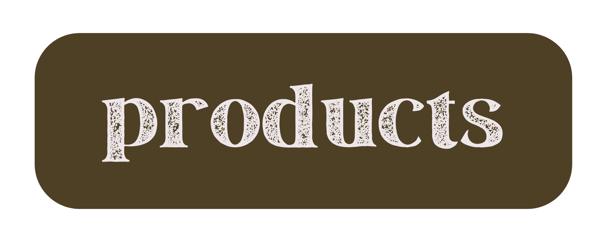
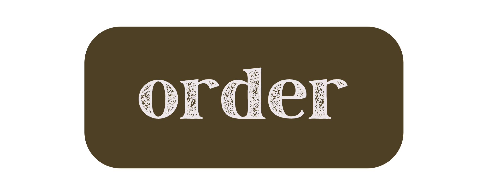
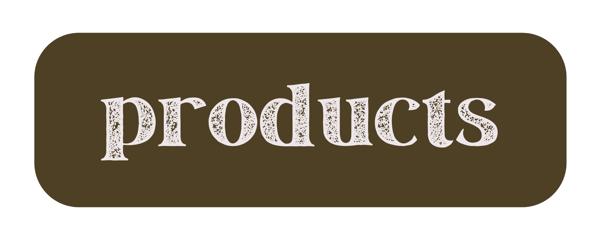
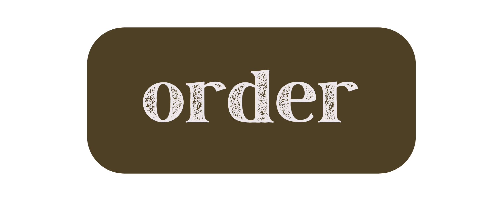

|
Here at Harvest Market, we are committed to supporting local farmers and promoting sustainable agriculture. We do so by providing a marketplace where growers and producers can sell their products to the community. We strive to create a vibrant and inclusive space where people can receive quality food, learn about the importance of sustainable agriculture, and support local businesses. We hope to increase access to fresh, healthy food for all members of our community, and to promote the success of local farms and small businesses. |